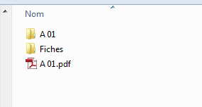

Contenu - Paramétrage - Nom du fichier
Une fiche individuelle contient toutes les informations de la personne :
Les fiches individuelles sont générées en même temps que l'arbre au format PDF.
Dans les préférences, vous pouvez choisir de générer ou non les fiches individuelles ainsi que l'emplacement où sont générés ces fichiers.

Si vous choisissez " Aucun ", aucune fiche ne sera générée.
Pour l'emplacement des fichiers, vous avez deux choix :
Dans l'illustration ci-dessous, vous voyez :

Le nom du fichier PDF généré est composé du nom et du prénom de la personne, de l'année de naissance et de décès (si une année n'est pas connue, elle est remplacée par un " X ") et de son identifiant dans la base. Cet identifiant est un numéro unique qui est attribué à la personne lors de sa création. Le fait de l'indiquer ici permet de retrouver des personnes dont un des renseignements a changé.